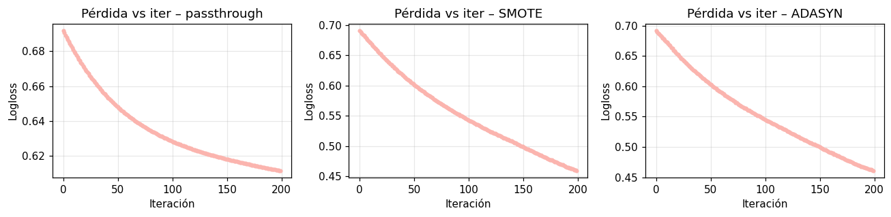
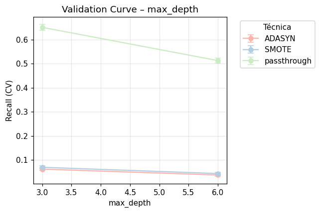

XGBoost#
Sección 1: Configuración Inicial y Preparación de Datos#
!pip install imbalanced-learn xgboost -q
[notice] A new release of pip is available: 25.0.1 -> 25.1
[notice] To update, run: python.exe -m pip install --upgrade pip
# === Cell 0: Comprueba versión de xgboost ===
import xgboost
print("xgboost version:", xgboost.__version__)
xgboost version: 2.1.4
import imblearn
print(imblearn.__version__)
0.12.4
1. Librerias#
# 1) IMPORTS
import time, joblib, pandas as pd, numpy as np, xgboost as xgb
from sklearn.model_selection import train_test_split, GridSearchCV, StratifiedKFold
from sklearn.compose import ColumnTransformer
from sklearn.preprocessing import OneHotEncoder, StandardScaler
from sklearn.impute import SimpleImputer
from sklearn.pipeline import Pipeline as SKPipeline
from imblearn.pipeline import Pipeline as ImbPipeline
from imblearn.over_sampling import SMOTE, ADASYN
from collections import defaultdict
from sklearn.metrics import (
recall_score, precision_score, f1_score,
roc_auc_score, average_precision_score
)
import pandas as pd, numpy as np, xgboost as xgb, time, matplotlib.pyplot as plt, seaborn as sns
from sklearn.metrics import (
recall_score, precision_score, f1_score,
roc_auc_score, average_precision_score,
accuracy_score # ✅ AGREGAR ESTA LÍNEA
)
2. Cargar Datos#
# 2) CARGA Y SPLIT (70 % train, 15 % val, 15 % test)
df = pd.read_csv(r"C:\Users\DELL\Desktop\Aprendizaje_de_Maquina\credit_risk_the_end.csv")
X,y = df.drop("incumplimiento_credito", axis=1), df["incumplimiento_credito"]
X_tr, X_tmp, y_tr, y_tmp = train_test_split(X, y, test_size=0.30, stratify=y, random_state=42)
X_val, X_te, y_val, y_te = train_test_split(X_tmp, y_tmp, test_size=0.50, stratify=y_tmp, random_state=42)
3.Preprocesamiento de Datos#
# 3) PREPROCESADOR (One-Hot a categóricas, escala a numéricas)
cat_cols = X_tr.select_dtypes(include=["object","category"]).columns.tolist()
num_cols = X_tr.select_dtypes(include=["int64","float64"]).columns.tolist()
cat_pipe = SKPipeline([
("imp", SimpleImputer(strategy="most_frequent")),
("ohe", OneHotEncoder(handle_unknown="ignore"))
])
num_pipe = SKPipeline([
("imp", SimpleImputer(strategy="median")),
("sc", StandardScaler())
])
preproc = ColumnTransformer([
("cat", cat_pipe, cat_cols),
("num", num_pipe, num_cols)
])
Sección 2: Definición de la Arquitectura y GridSearch#
Pipeline y GridSearch de Hiperparámetros#
# 4) PIPELINE + GRIDSEARCH (sin early-stopping)
scale_pos = (y_tr==0).sum() / (y_tr==1).sum()
base_xgb = xgb.XGBClassifier(
objective="binary:logistic",
tree_method="hist",
eval_metric="logloss",
random_state=42)
pipe = ImbPipeline([
("pre", preproc),
("sample", SMOTE(random_state=42)), # se sobreescribe en grid
("clf", base_xgb)
])
param_grid = [
# SMOTE
{
"sample": [SMOTE(random_state=42)],
"clf__scale_pos_weight": [1], # NO se usa weight
"clf__max_depth": [3, 6],
"clf__learning_rate": [0.1, 0.05, 0.01],
"clf__n_estimators": [200, 400],
"clf__subsample": [0.8, 1.0],
"clf__colsample_bytree": [0.8, 1.0]
},
# ADASYN
{
"sample": [ADASYN(random_state=42)],
"clf__scale_pos_weight": [1], # idem
"clf__max_depth": [3, 6],
"clf__learning_rate": [0.1, 0.05, 0.01],
"clf__n_estimators": [200, 400],
"clf__subsample": [0.8, 1.0],
"clf__colsample_bytree": [0.8, 1.0]
},
# Sin remuestreo (balance via scale_pos_weight)
{
"sample": ["passthrough"],
"clf__scale_pos_weight": [scale_pos], # calculado antes
"clf__max_depth": [3, 6],
"clf__learning_rate": [0.1, 0.05, 0.01],
"clf__n_estimators": [200, 400],
"clf__subsample": [0.8, 1.0],
"clf__colsample_bytree": [0.8, 1.0]
}
]
cv = StratifiedKFold(5, shuffle=True, random_state=42)
grid = GridSearchCV(pipe, param_grid, scoring="recall",
cv=cv, n_jobs=-1, verbose=2, return_train_score=True)
tic = time.time()
grid.fit(X_tr, y_tr)
print(f"✅ GridSearch terminado en {time.time()-tic:.1f}s – Mejor recall CV: {grid.best_score_:.4f}")
print("üîë Parámetros √≥ptimos:", grid.best_params_)
Fitting 5 folds for each of 144 candidates, totalling 720 fits
✅ GridSearch terminado en 442.0s – Mejor recall CV: 0.6687
üîë Parámetros √≥ptimos: {'clf__colsample_bytree': 0.8, 'clf__learning_rate': 0.01, 'clf__max_depth': 3, 'clf__n_estimators': 200, 'clf__scale_pos_weight': 10.699978691668443, 'clf__subsample': 0.8, 'sample': 'passthrough'}
Sección 3: Evaluación Básica del Modelo#
1.Tabla comparativa de métricas#
# ------------------------------------------------------------------
# 0. Librerías necesarias (ya importadas antes) --------------------
from collections import defaultdict
from sklearn.metrics import (
recall_score, precision_score, f1_score,
roc_auc_score, average_precision_score
)
import pandas as pd, numpy as np, xgboost as xgb, time, matplotlib.pyplot as plt, seaborn as sns
# ------------------------------------------------------------------
# 1. Extraer el mejor set de params para cada técnica --------------
# ------------------------------------------------------------------
# cv_results_ contiene un registro por combinación probada
cv = pd.DataFrame(grid.cv_results_)
cv["sampler_name"] = cv.param_sample.apply(
lambda s: "passthrough" if s=="passthrough" else type(s).__name__
)
# Te quedas con la fila de mayor recall CV por técnica
best_by_sampler = (
cv.sort_values("mean_test_score", ascending=False)
.groupby("sampler_name")
.head(1)
)
# ------------------------------------------------------------------
# 2. Entrenar cada booster con early-stopping ----------------------
# ------------------------------------------------------------------
metricas = []
for _, row in best_by_sampler.iterrows():
sampler_name = row["sampler_name"]
# ---- 2.1 reconstruir preproc y sampler -----------------------
pre_fitted = grid.best_estimator_.named_steps["pre"] # ya entrenado
sampler_opt = row["param_sample"]
xgb_params = {k.replace("param_clf__", ""): v
for k, v in row.items() if k.startswith("param_clf__")}
# Transforma sets
Xtr_p = pre_fitted.transform(X_tr)
Xval_p= pre_fitted.transform(X_val)
Xte_p = pre_fitted.transform(X_te)
# Re-muestra si es necesario
if sampler_name == "passthrough":
Xtr_res, ytr_res = Xtr_p, y_tr
else:
Sampler = type(sampler_opt)
sampler = Sampler(**sampler_opt.get_params())
Xtr_res, ytr_res = sampler.fit_resample(Xtr_p, y_tr)
# ---- 2.2 entrenar booster -----------------------------------
dtrain = xgb.DMatrix(Xtr_res, label=ytr_res)
dval = xgb.DMatrix(Xval_p, label=y_val)
dtest = xgb.DMatrix(Xte_p, label=y_te)
core_params = {
"objective":"binary:logistic",
"eval_metric":"logloss",
"tree_method":"hist",
"learning_rate":float(xgb_params["learning_rate"]),
"max_depth":int(xgb_params["max_depth"]),
"scale_pos_weight":float(xgb_params["scale_pos_weight"]),
"seed":42
}
tic = time.time()
booster = xgb.train(
params=core_params,
dtrain=dtrain,
num_boost_round=int(xgb_params["n_estimators"]),
evals=[(dval,"val")],
early_stopping_rounds=10,
verbose_eval=False
)
elapsed = time.time() - tic
# ---- 2.3 métricas en test ------------------------------------
proba = booster.predict(dtest)
pred = (proba > 0.50).astype(int)
metricas.append({
"Técnica": sampler_name,
"Accuracy": accuracy_score(y_te, pred), # ✅ NUEVA MÉTRICA
"Recall": recall_score(y_te, pred, zero_division=0),
"Precision": precision_score(y_te, pred, zero_division=0),
"F1-score": f1_score(y_te, pred, zero_division=0),
"AUC": roc_auc_score(y_te, proba),
"AvgPrec": average_precision_score(y_te, proba),
"Tiempo (s)": round(elapsed, 1)
})
# ------------------------------------------------------------------
# 3. Tabla comparativa + ranking ----------------------------------
# ------------------------------------------------------------------
df_metricas = (
pd.DataFrame(metricas)
.set_index("Técnica")
.round(4)
.sort_values("Recall", ascending=False)
)
best_model = df_metricas.index[0]
display(
df_metricas.style
.background_gradient(subset=["Recall","AUC","AvgPrec"],
cmap="Blues")
.highlight_max(subset=["Recall"], color="salmon")
.set_caption("XGBoost – Métricas por técnica de balanceo")
)
print(f"\nüîù Mejor modelo por Recall: **{best_model}**")
| Accuracy | Recall | Precision | F1-score | AUC | AvgPrec | Tiempo (s) | |
|---|---|---|---|---|---|---|---|
| Técnica | |||||||
| passthrough | 0.674100 | 0.655100 | 0.158900 | 0.255800 | 0.727300 | 0.219200 | 1.300000 |
| SMOTE | 0.860500 | 0.244500 | 0.218300 | 0.230700 | 0.697100 | 0.174100 | 3.100000 |
| ADASYN | 0.864900 | 0.206800 | 0.208000 | 0.207400 | 0.693700 | 0.168700 | 3.000000 |
üîù Mejor modelo por Recall: **passthrough**
2.Matries de Confusión#
import matplotlib.pyplot as plt, seaborn as sns, numpy as np, xgboost as xgb
from sklearn.metrics import (
ConfusionMatrixDisplay, RocCurveDisplay, PrecisionRecallDisplay
)
sns.set_palette("Pastel1")
plt.rcParams["figure.dpi"] = 110
# ----------------------------------------------------------------
# A. Recolectar boosters / proba / pred por técnica ---------------
# ----------------------------------------------------------------
boosters = {}
proba_dict = {}
pred_dict = {}
evals_hist_dict = {} # ⬅️ historial de logloss por técnica
for _, row in best_by_sampler.iterrows():
tech = row["sampler_name"]
sampler_opt = row["param_sample"]
xgb_params = {k.replace("param_clf__", ""): v
for k, v in row.items() if k.startswith("param_clf__")}
# --- transformar y (si aplica) remuestrear ------------------
Xtr_p = pre_fitted.transform(X_tr)
Xval_p= pre_fitted.transform(X_val)
Xte_p = pre_fitted.transform(X_te)
if tech == "passthrough":
Xtr_res, ytr_res = Xtr_p, y_tr
else:
sampler = type(sampler_opt)(**sampler_opt.get_params())
Xtr_res, ytr_res = sampler.fit_resample(Xtr_p, y_tr)
# --- booster con historial ----------------------------------
dtrain = xgb.DMatrix(Xtr_res, label=ytr_res)
dval = xgb.DMatrix(Xval_p, label=y_val)
dtest = xgb.DMatrix(Xte_p, label=y_te)
params = {
"objective":"binary:logistic",
"eval_metric":"logloss",
"tree_method":"hist",
"learning_rate":float(xgb_params["learning_rate"]),
"max_depth":int(xgb_params["max_depth"]),
"scale_pos_weight":float(xgb_params["scale_pos_weight"]),
"seed":42
}
evals_result = {} # se llenará durante el fit
booster = xgb.train(
params,
dtrain,
num_boost_round=int(xgb_params["n_estimators"]),
evals=[(dval, "val")],
early_stopping_rounds=10,
evals_result=evals_result,
verbose_eval=False
)
boosters[tech] = booster
proba_dict[tech] = booster.predict(dtest)
pred_dict[tech] = (proba_dict[tech] > 0.50).astype(int)
evals_hist_dict[tech] = evals_result # guarda historial
# ----------------------------------------------------------------
# B. Matrices de Confusión lado a lado ----------------------------
# ----------------------------------------------------------------
n = len(boosters)
fig, axes = plt.subplots(1, n, figsize=(4*n, 3))
# Asegurar que 'axes' sea siempre iterable
axes = np.atleast_1d(axes)
for ax, (tech, pred) in zip(axes, pred_dict.items()):
ConfusionMatrixDisplay.from_predictions(
y_te, pred, ax=ax, cmap="Pastel1"
)
ax.set_title(f"Confusión – {tech}")
plt.tight_layout()
plt.show()
3.Curvas ROC por técnica de Balanceo#
fig, axes = plt.subplots(1, n, figsize=(4*n,3))
if n==1: axes=[axes]
for ax,(tech, proba) in zip(axes, proba_dict.items()):
RocCurveDisplay.from_predictions(y_te, proba, ax=ax)
ax.plot([0,1],[0,1],"--", color="gray")
ax.set_title(f"ROC – {tech}")
plt.tight_layout(); plt.show()
4.Curvas ROC por técnica de Balanceo#
plt.figure(figsize=(6,3))
sns.barplot(x="Técnica", y="Tiempo (s)", data=df_metricas.reset_index())
plt.title("⏱️ Tiempo total de entrenamiento")
plt.tight_layout(); plt.show()
C:\Users\DELL\AppData\Local\Temp\ipykernel_31508\2211252754.py:4: UserWarning: Glyph 9201 (\N{STOPWATCH}) missing from font(s) DejaVu Sans.
plt.tight_layout(); plt.show()
c:\Users\DELL\anaconda3\envs\KrakenData\lib\site-packages\IPython\core\pylabtools.py:152: UserWarning: Glyph 9201 (\N{STOPWATCH}) missing from font(s) DejaVu Sans.
fig.canvas.print_figure(bytes_io, **kw)
5.Tabla de hiperparámetros óptimos#
params_tbl = (best_by_sampler
.filter(regex="param_clf__|sampler_name")
.set_index("sampler_name")
.rename_axis("Técnica")
.rename(columns=lambda c: c.replace("param_clf__","")))
display(params_tbl)
| colsample_bytree | learning_rate | max_depth | n_estimators | scale_pos_weight | subsample | |
|---|---|---|---|---|---|---|
| Técnica | ||||||
| passthrough | 0.8 | 0.01 | 3 | 200 | 10.699979 | 0.8 |
| SMOTE | 0.8 | 0.01 | 3 | 200 | 1 | 0.8 |
| ADASYN | 0.8 | 0.01 | 3 | 200 | 1 | 0.8 |
6.Curvas de Aprendizaje y Pérdida#
# ---------------------------------------------------------------
# Curvas de pérdida (logloss) por técnica – validación ----------
# ---------------------------------------------------------------
import matplotlib.pyplot as plt, numpy as np, seaborn as sns
sns.set_palette("Pastel1") # mantiene la paleta unificada
n = len(evals_hist_dict)
fig, axes = plt.subplots(1, n, figsize=(4*n, 3))
axes = np.atleast_1d(axes) # asegura iterabilidad en n=1
for i, (tech, ev_res) in enumerate(evals_hist_dict.items()):
# El primer/único key suele ser 'val' o 'validation_0'
valid_key = list(ev_res.keys())[0]
logloss = ev_res[valid_key]["logloss"]
ax = axes[i]
ax.plot(logloss, marker="o", markersize=3, linewidth=1.2)
ax.set_title(f"Pérdida vs iter – {tech}")
ax.set_xlabel("Iteración")
ax.set_ylabel("Logloss")
ax.grid(True, alpha=0.3)
plt.tight_layout()
plt.show()

7.Curva Precision-Recall comparativa#
plt.figure(figsize=(6,4))
for tech in boosters:
PrecisionRecallDisplay.from_predictions(y_te, proba_dict[tech],
name=tech, ax=plt.gca())
plt.title("Curva Precision-Recall")
plt.tight_layout(); plt.show()
8.Heatmap de Recall#
plt.figure(figsize=(4,3))
sns.heatmap(df_metricas[["Recall"]].T, annot=True, fmt=".3f", cmap="Pastel1")
plt.title("Heatmap de Recall por técnica")
plt.tight_layout(); plt.show()
9.Curvas de Validación (max_depth)#
# ---------------------------------------------------------------
# Validation Curves *sin* reentrenar – usando grid.cv_results_
# ---------------------------------------------------------------
import matplotlib.pyplot as plt, seaborn as sns, numpy as np
sns.set_palette("Pastel1")
plt.rcParams["figure.dpi"] = 110
# 1️⃣ hiperparámetro a analizar -------------------------------
param_name_cv = "param_clf__max_depth" # cámbialo a otro param_
param_label = "max_depth" # para el eje X
# 2️⃣ DataFrame base ------------------------------------------
cv = pd.DataFrame(grid.cv_results_)
cv["sampler_name"] = cv.param_sample.apply(
lambda s: "passthrough" if s == "passthrough" else type(s).__name__
)
# 3️⃣ Tabla agregada: mean ± std por valor del hiperparámetro --
agg = (cv
.groupby(["sampler_name", param_name_cv])
.agg(mean_recall=("mean_test_score", "mean"),
std_recall =("std_test_score", "mean"))
.reset_index())
# 4️⃣ Graficar --------------------------------------------------
plt.figure(figsize=(6,4))
for tech, sub in agg.groupby("sampler_name"):
# convierte None a np.nan para ordenar correctamente
x_vals = sub[param_name_cv].apply(lambda v: np.nan if v is None else int(v))
y = sub["mean_recall"]
yerr = sub["std_recall"]
plt.errorbar(x_vals, y, yerr=yerr, marker="o",
capsize=4, linestyle="-", label=tech)
plt.xlabel(param_label)
plt.ylabel("Recall (CV)")
plt.title(f"Validation Curve – {param_label}")
plt.grid(True, alpha=0.3)
plt.legend(title="Técnica", bbox_to_anchor=(1.05,1), loc="upper left")
plt.tight_layout()
plt.show()

10.Cumulative Gain & Lift#
fig, axes = plt.subplots(1, 2, figsize=(10,4))
for tech, proba in proba_dict.items():
order = np.argsort(-proba)
y_sorted = y_te.values[order]
cum_pos = np.cumsum(y_sorted)
pct_data = np.arange(1,len(y_sorted)+1)/len(y_sorted)
pct_pos = cum_pos / cum_pos[-1]
axes[0].plot(pct_data, pct_pos, label=tech)
axes[1].plot(pct_data, pct_pos/pct_data, label=tech)
axes[0].plot([0,1],[0,1],"--", color="gray")
axes[1].axhline(1, linestyle="--", color="gray")
axes[0].set_title("Cumulative Gain"); axes[1].set_title("Lift Chart")
for ax in axes: ax.set_xlabel("% datos"); ax.set_ylabel("% positivos acumulados / Lift")
axes[0].legend(); plt.tight_layout(); plt.show()
11.Curva KS#
plt.figure(figsize=(5,4))
for tech, proba in proba_dict.items():
pos = np.sort(proba[y_te==1]); neg = np.sort(proba[y_te==0])
cdf_pos = np.arange(1,len(pos)+1)/len(pos)
cdf_neg = np.arange(1,len(neg)+1)/len(neg)
thresh = np.sort(np.concatenate([pos,neg]))
cdfp_i = np.searchsorted(pos, thresh, side='right')/len(pos)
cdfn_i = np.searchsorted(neg, thresh, side='right')/len(neg)
ks = np.max(np.abs(cdfp_i-cdfn_i))
plt.plot(thresh, cdfp_i-cdfn_i, label=f"{tech} (KS={ks:.2f})")
plt.axhline(0, color="gray"); plt.title("Curva KS (Diferencia CDFs)")
plt.xlabel("Score"); plt.ylabel("CDF_pos - CDF_neg"); plt.legend()
plt.tight_layout(); plt.show()